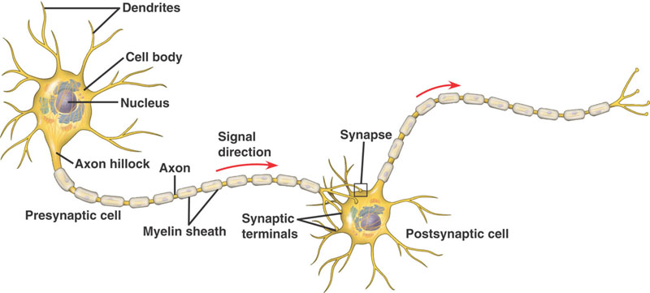
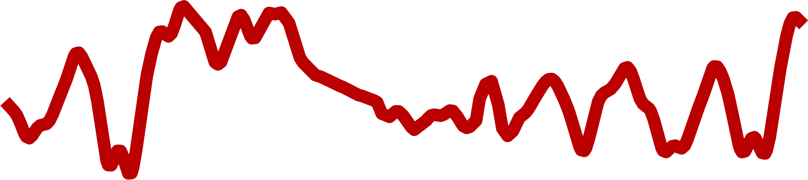
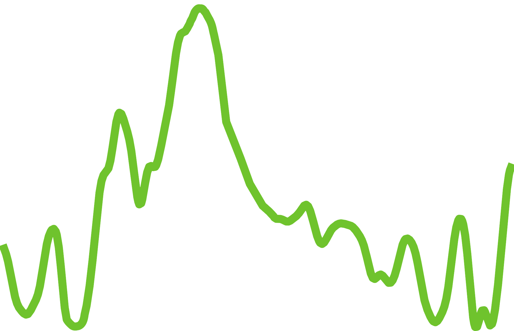
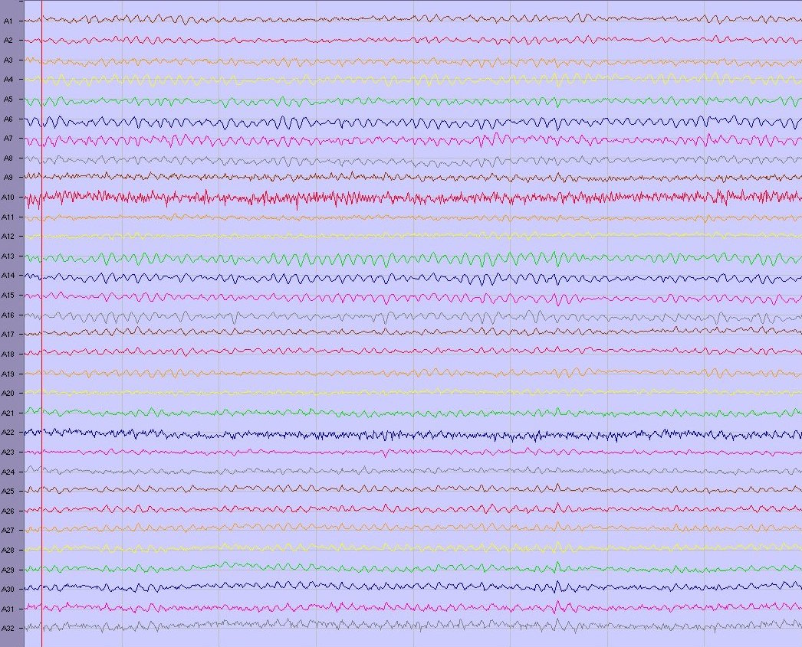
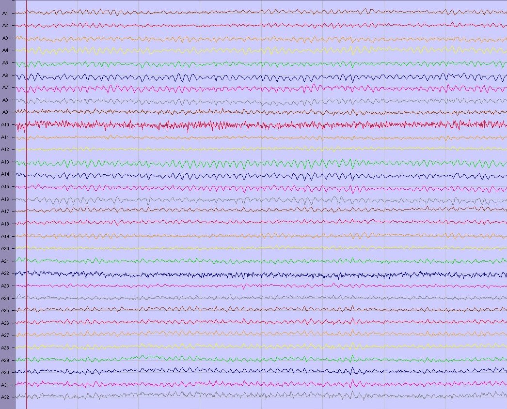
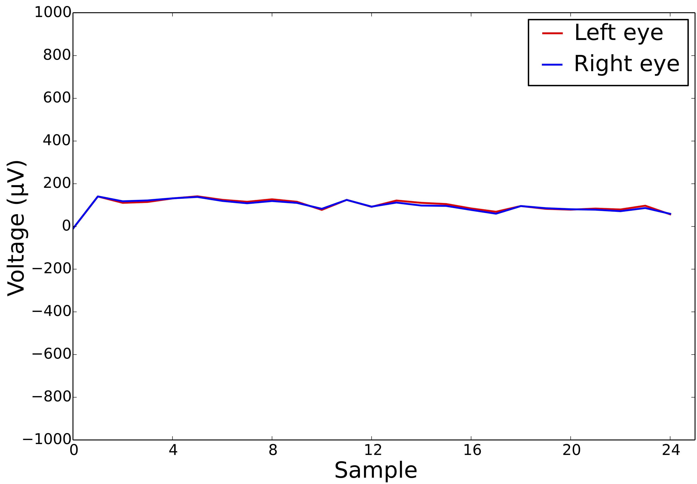
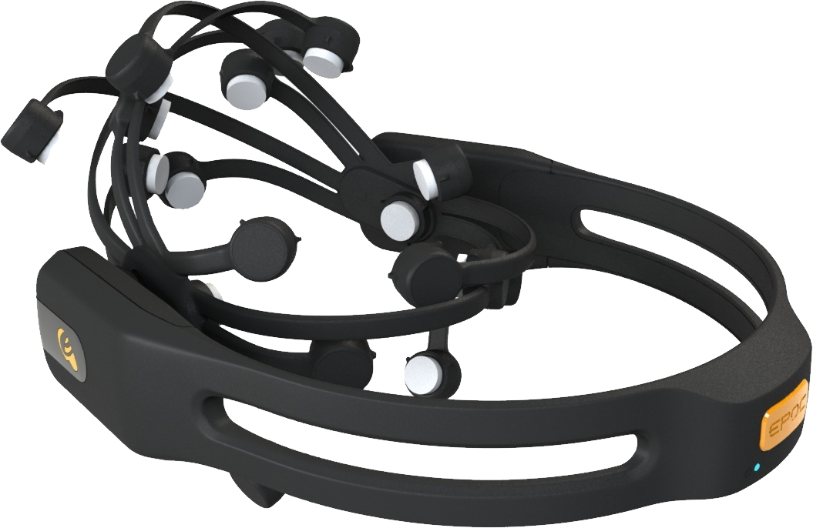

EyeWink e dintorni
Davide Valeriani
BCI-NE Laboratory
University of Essex
Mille mondi dell'informatica
Qualcosa di familiare
program Hello;
uses crt;
var age;
begin
writeln ('Hello, world. Please insert your age:')
readln (age);
writeln ('Thank you!');
repeat until keypressed;
end.
Automazione di processi
Ovvero, programmare il computer per fare quelle operazioni ripetitive e noiose che non ci piacciono.
Esempio: tenere la contabilità, registro elettronico, ecc.
Esempio: correzione compiti
- Ogni studente è valutato da due docenti
- Ogni docente compila un foglio Excel per ogni studente
- Nel foglio di ogni studente vengono indicati i suoi dati
- La segreteria fornisce i fogli precompilati ai docenti
Problema: 100 studenti = 200 fogli da preparare :(
Soluzione
Videogiochi
150 linee di codice Python!
Disponibile su github.com/davidevaleriani/python
AI nei videogiochi
Scopo: battere l'umano
- Scacchi: PC IBM vince su Kasparov (10 feb 1996)
- Go: PC Google batte campione europeo 2 dan (ott 2015)

Paradosso di Moravec
"I compiti difficili per gli umani sono facili per i computer.
I compiti difficili per i computer sono facili per gli umani."

Robotica industriale
- Spazio di movimento limitato
- Usata per assemblaggio e movimentazione
Ritorno alle origini!
- Progetto: scrivere una libreria in C++ per controllare il robot.
- Primo passo: imparare il linguaggio PDL2.
Comau SmartSix
Robotica mobile
- Il robot può ora spostarsi nell'ambiente
- Visione artificiale per percepire l'ambiente
- Intelligenza artificiale (AI) per interpretarlo
Sick Robot Day 2012
https://youtu.be/4p7VZ7N0Xng
Brain-Computer Interfaces
Brain-Computer Interfaces
o "Interfacce neurali"
Interfacce che permettono all'utente di controllare altri dispositivi con il solo uso della mente.
Nate per aiutare le persone affette da disabilità a comunicare.
Cervello umano
Oltre 80 miliardi di neuroni interconnessi.
Event-related potentials
Ad ogni azione corrisponde una reazione (uguale e contraria)
Attività cerebrale in risposta a un evento.
 Come funzionano?

 

I nostri esperimenti
Dove si usano
- Comunicazione: mouse e tastiera controllati con la mente
- Decisioni: ridurre gli errori in situazioni critiche
- Controllo: sedia a rotelle comandata con la mente
- Videogiochi: comandi addizionali (e.g., World of Warcraft)
Comunicazione

Decisioni
- Tra poco vedrete un'immagine.
- Siamo al circolo polare artico, quindi ci saranno tanti pinguini.
- Il vostro obiettivo è trovare, se c'è, un orso polare.
P.S. avrete 250 ms a disposizione
Pronti?
In quanti hanno visto un orso?
In quanti hanno visto un orso?

BCI per le decisioni
- Errori individuali: 18.5 %
- Errori in coppia (usando la maggioranza): 18.5 %
- Idea: usare la BCI per stimare il grado di confidenza
- Risultati: errori in coppia con BCI: 13.8 %
EyeWink
Dispositivo per controllare lo smartphone con gli occhi
- Sensori sulla fronte per rilevare movimenti oculari
- Connessione allo smartphone via Bluetooth Low Energy
- App per configurare il dispositivo

D. Valeriani and A. Matran-Fernandez, "Towards a wearable device for controlling a smartphone with eye winks," Computer Science and Electronic Engineering Conference (CEEC), 2015.
Movimenti oculari
Esempi di segnali registrati per nessuna attività, occhiolino sinistro e occhiolino destro


D. Valeriani and A. Matran-Fernandez, "Towards a wearable device for controlling a smartphone with eye winks," Computer Science and Electronic Engineering Conference (CEEC), 2015.
EyeWink in azione
Startup
- Idea vincente di HackTheBrain UK (marzo 2015)
- Presentazione al London Science Museum in aprile 2015
- Campagna di crowdfunding in novembre 2015 (£ 4605)
- Nascita di EyeWink Ltd in dicembre 2015
- Lancio sul mercato entro l'anno
- Visitate eyewink.net e seguiteci sui social!
Cybathlon 2016
Competizione internazionale per paratleti supportati dalla tecnologia: 8 ottobre 2016
Il videogioco
- Avatar che corre su un tracciato
- Piattaforme di quattro colori sparse sulla pista
- Ad ogni piattaforma corrisponde un comando diverso
- Salta (viola)
- Corri (blu)
- Rotola (gialla)
- Riposati (grigia)

Configurazione della BCI
Comandi associati a diversi processi mentali
- Salta → Movimento immaginario delle gambe
- Corri → Calcolo mentale
- Rotola → Immagina di sentire un telefono squillare
- Riposati → Non pensare a nulla

Training della BCI
- Insegna al sistema a riconoscere i vari processi mentali fornendogli esercizi svolti
- Esempio: {x+2=4, x+5=7} → x+10=?
Più esempi diamo e meglio impara?
No, non è così "semplice"
Siete pronti a provare?
- Useremo l'Emotiv Epoc, dispositivo commerciale "low-cost" 
- Elettrodi bagnati con acqua e sale
- Per semplificare, non useremo il comando "rotola" (telefono)
- Non aspettatevi risultati strabilianti: è low-cost
Volontari?
FINE
Domande?
Nel caso ve ne venissero altre in futuro, contattatemi:
- Email: davide.valeriani@gmail.com
- Web: www.davidevaleriani.it
- Facebook, Twitter, LinkedIn, etc.